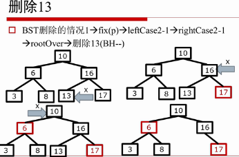
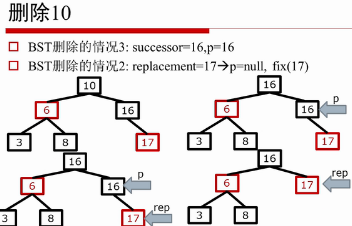
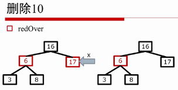
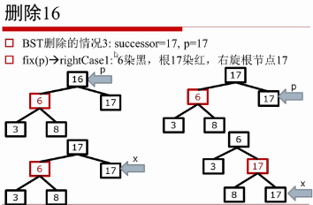
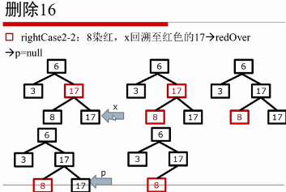

TreeMap源码
一、基本结构
节点结构
xxxxxxxxxxstatic final class Entry<K,V> implements Map.Entry<K,V> { K key; V value; Entry<K,V> left; Entry<K,V> right; Entry<K,V> parent; boolean color = BLACK;// black为true Entry(K key, V value, Entry<K,V> parent) { this.key = key; this.value = value; this.parent = parent; } public K getKey() { return key; } public V getValue() { return value; } public V setValue(V value) { V oldValue = this.value; this.value = value; return oldValue; } public boolean equals(Object o) {//同时比较key value if (!(o instanceof Map.Entry)) return false; Map.Entry<?,?> e = (Map.Entry<?,?>)o; return valEquals(key,e.getKey()) && valEquals(value,e.getValue()); } public int hashCode() {//同时用到了key和value的哈希的异或 int keyHash = (key==null ? 0 : key.hashCode()); int valueHash = (value==null ? 0 : value.hashCode()); return keyHash ^ valueHash;//异或,不同为1 } public String toString() { return key + "=" + value; }}基本属性：
xxxxxxxxxx private final Comparator<? super K> comparator;//比较器 private transient Entry<K,V> root; //根节点 private transient int size = 0; //节点数量 private transient int modCount = 0; //结构修改的次数构造函数：
xxxxxxxxxxpublic TreeMap() { comparator = null;}public TreeMap(Comparator<? super K> comparator) { this.comparator = comparator;}/** * Constructs a new tree map containing the same mappings as the given * map, ordered according to the <em>natural ordering</em> of its keys. * All keys inserted into the new map must implement the {@link * Comparable} interface. Furthermore, all such keys must be * <em>mutually comparable</em>: {@code k1.compareTo(k2)} must not throw * a {@code ClassCastException} for any keys {@code k1} and * {@code k2} in the map. This method runs in n*log(n) time. * * @param m the map whose mappings are to be placed in this map * @throws ClassCastException if the keys in m are not {@link Comparable}, * or are not mutually comparable * @throws NullPointerException if the specified map is null */public TreeMap(Map<? extends K, ? extends V> m) { comparator = null; putAll(m);}/** * Constructs a new tree map containing the same mappings and * using the same ordering as the specified sorted map. This * method runs in linear time. * * @param m the sorted map whose mappings are to be placed in this map, * and whose comparator is to be used to sort this map * @throws NullPointerException if the specified map is null */public TreeMap(SortedMap<K, ? extends V> m) { comparator = m.comparator(); try { buildFromSorted(m.size(), m.entrySet().iterator(), null, null); } catch (java.io.IOException cannotHappen) { } catch (ClassNotFoundException cannotHappen) { }}插入:如果已经有key，则替代并返回oldValue。
xxxxxxxxxx/** * @return the previous value associated with {@code key}, or * {@code null} if there was no mapping for {@code key}. * (A {@code null} return can also indicate that the map * previously associated {@code null} with {@code key}.) * @throws ClassCastException if the specified key cannot be compared * with the keys currently in the map * @throws NullPointerException if the specified key is null * and this map uses natural ordering, or its comparator * does not permit null keys */public V put(K key, V value) { Entry<K,V> t = root; if (t == null) { //如果为空，则添加为根节点 compare(key, key); // type (and possibly null) check root = new Entry<>(key, value, null); size = 1; modCount++; return null; } int cmp; Entry<K,V> parent; // split comparator and comparable paths Comparator<? super K> cpr = comparator; if (cpr != null) { //1.使用指定的比较器 do { parent = t; cmp = cpr.compare(key, t.key); if (cmp < 0) t = t.left; else if (cmp > 0) t = t.right; else return t.setValue(value); //如果找到key相等的，则设置新值并返回 } while (t != null); } else { //1.使用默认的比较器 if (key == null) throw new NullPointerException();//key 不能为null ("unchecked") Comparable<? super K> k = (Comparable<? super K>) key; do { parent = t; cmp = k.compareTo(t.key); if (cmp < 0) t = t.left; else if (cmp > 0) t = t.right; else return t.setValue(value); } while (t != null); } //此时，说明没有key相等的，需要在叶子节点parent后添加 Entry<K,V> e = new Entry<>(key, value, parent);//节点指向叶子节点parent if (cmp < 0) //左孩子 parent.left = e; else //右孩子 parent.right = e; fixAfterInsertion(e); //从e开始向上调整。 size++; //计数+1 modCount++; //结构修改+1 return null;}一些辅助操作，包括null检查：
xxxxxxxxxx//返回节点颜色，null为blackprivate static <K,V> boolean colorOf(Entry<K,V> p) { return (p == null ? BLACK : p.color);}//返回父亲节点private static <K,V> Entry<K,V> parentOf(Entry<K,V> p) { return (p == null ? null: p.parent);}//设置颜色private static <K,V> void setColor(Entry<K,V> p, boolean c) { if (p != null) p.color = c;}//左孩子private static <K,V> Entry<K,V> leftOf(Entry<K,V> p) { return (p == null) ? null: p.left;}//右孩子private static <K,V> Entry<K,V> rightOf(Entry<K,V> p) { return (p == null) ? null: p.right;}二、红黑树的插入操作


调整策略：自底向上，直到根节点或平衡。在调整p节点之前，要让p的左右子树都为RBT。
插入调整策略：

先只考虑父亲P为G的左孩子，右孩子对称。
case 1：
条件：叔叔Y为红色，X可左可右
处理方式：父亲、叔叔、爷爷的颜色取反。将引用回溯至爷爷。
进过调整之后：
- 满足了：不能有连续的红节点。
- X,G的黑高未改变。
- P,Y的黑高同时+1
- 可能不满足：因为G是红色的，可能不满足根为黑，不能连续红。需要继续调整。因为G是红色的，所以case1可能继续转为case1, case2, case3。
- 如果G为根节点，此时将G染黑，算法结束。这是唯一地增加整个黑高的情况。

xxxxxxxxxx// 1. 父节点是左孩子 if (parentOf(x) == leftOf(parentOf(parentOf(x)))) {//父节点 是 爷节点 的左孩子 Entry<K,V> y = rightOf(parentOf(parentOf(x))); //取得叔叔节点y, 爷的右孩子 // 1.1 叔叔节点为红色：将父亲、叔叔、爷爷的颜色取反，为黑、黑、红 if (colorOf(y) == RED) { setColor(parentOf(x), BLACK); setColor(y, BLACK); setColor(parentOf(parentOf(x)), RED); x = parentOf(parentOf(x)); //将x的引用设置为爷爷节点 }case 2：
条件：叔叔Y为黑色，X为右孩子。
处理方式：X指向父亲P，再左旋，,转为case3。（子变父，左旋）
调整之后：
- P,X,G的左右子树的BH未改变，即不会引起BH的变化
- 但px为连续红，需要继续调整

xxxxxxxxxx // 1.2 叔叔为黑色 else { // 若x为右孩子 if (x == rightOf(parentOf(x))) { x = parentOf(x);//x指向父亲 rotateLeft(x); //左旋 }case 3：
- 条件：叔叔Y为黑色，X为左孩子。
- 处理方式：父亲P涂黑，爷爷G染红，右旋爷爷G，结束。
- 调整之后：BH未改变，P为最上面的节点，为黑色。算法结束。

xxxxxxxxxx // 1.2.2若x为左孩子 setColor(parentOf(x), BLACK); //父染黑 setColor(parentOf(parentOf(x)), RED);//爷染红 rotateRight(parentOf(parentOf(x))); //右旋爷 
总体的case:

向上调整全部代码：
xxxxxxxxxxprivate void fixAfterInsertion(Entry<K,V> x) { x.color = RED;//插入节点设置为红色 // 如果是根节点，或者父节点是黑色，则不需要调整。 // 如果 x非空 && 不是根 && 父节点为红，则需要调整 while (x != null && x != root && x.parent.color == RED) { // 1. 父节点是左孩子 if (parentOf(x) == leftOf(parentOf(parentOf(x)))) {//父节点 是 爷节点 的左孩子 Entry<K,V> y = rightOf(parentOf(parentOf(x))); //取得叔叔节点y, 爷的右孩子 // 1.1 case1 叔叔节点为红色：将父亲、叔叔、爷爷的颜色取反，为黑、黑、红 if (colorOf(y) == RED) { setColor(parentOf(x), BLACK); setColor(y, BLACK); setColor(parentOf(parentOf(x)), RED); x = parentOf(parentOf(x)); //将x的引用设置为爷爷节点 } // 1.2 叔叔为黑色 else { // 1.2.1 case2 若x为右孩子 if (x == rightOf(parentOf(x))) { x = parentOf(x);//x指向父亲 rotateLeft(x); //左旋 } // 1.2.2 case3 若x为左孩子 setColor(parentOf(x), BLACK); //父染黑 setColor(parentOf(parentOf(x)), RED);//爷染红 rotateRight(parentOf(parentOf(x))); //右旋爷 } // 2. 父节点是右孩子，与上面类似。旋转相反即可。 } else { Entry<K,V> y = leftOf(parentOf(parentOf(x))); if (colorOf(y) == RED) { setColor(parentOf(x), BLACK); setColor(y, BLACK); setColor(parentOf(parentOf(x)), RED); x = parentOf(parentOf(x)); } else { if (x == leftOf(parentOf(x))) { x = parentOf(x); rotateRight(x); } setColor(parentOf(x), BLACK); setColor(parentOf(parentOf(x)), RED); rotateLeft(parentOf(parentOf(x))); } } } root.color = BLACK;}三、红黑树的删除操作
删除红色节点，不会影响BH，无需操作。
删除黑色节点，节点所在的子树的BH--，导致不平衡，需要调整。

每次将节点进行染色、旋转操作，都需要考虑：
- 是否有相同BH，X的BH本身要比别的小，所以只能不变或者增加
- 是否连续红，需要染黑？还是回溯？
高层伪代码：

case4 P和S染黑-->P和RN染黑
需要调整的情况：
case 1：此时X的黑高少1
- 条件：兄弟节点S为红色。隐含条件父亲P，LN,RN都为黑色。
- 处理方式:兄弟节点S染黑，父亲P染红，左旋P，使得LN成为新的兄弟S
- 调整之后：BH(X)比BH(LN)少1，违反BH，需要继续调整X。不会引起BH变化。
- case 1可转化为：case2-2, case3, case4-1, case4-2

case 2:
条件：兄弟S、LN、RN均为黑色
- case2-1条件：父亲P为黑色
- case2-1条件：父亲P为红色
处理方式相同：兄弟S染红，X回溯至P
case2-1：父亲P为黑色
调整后：
- X的黑高不变，S的黑高减1，导致x和s黑高相同。
- 但父亲P的黑高减小了1，真个树违反了BH相等。需要继续调整P。
可转化为：所有case，因为P是黑色的。
注意：若P为根节点，则这是唯一减小真个红黑书BH的情形。

case2-2:父亲P为红色
调整后：
- 与case2-1一样，X的黑高不变，S的黑高减1，导致x和s黑高相同。
- 与case2-1一样，但父亲P的黑高减小了1，真个树违反了BH相等。需要继续调整P。
- 特别地：P与S违反了连续红。

转化为：这种情况下，只需要将P染黑即可，算法结束(redOver)。这样也恢复了P的黑高。

case 3：此时X的黑高小1
条件：父亲S为黑色，LN为红色，RN为黑色
处理方式：LN染黑，S染红，右旋S,S指向LN
调整之后：
- S, LN的左右子树满足黑高条件
- 但X的黑高任然比LN小1，需要继续调整X
可转化为：case4-1，case4-2。不会引起黑高变化。

case 4：
条件：兄弟S为黑色，父亲P可红可黑，右侄子RN为红色
- case4-1:LN为红色
- case4-2:LN为黑色
处理方式：兄弟S的颜色设置为与父亲P相同，P染黑，RN染黑，左旋P,X指向根，rootOver
case4-1：
- LN为红色

case4-2：
- LN为黑色

调整之后：
- 染黑后的P变为左子树，整好填补了左子树缺少的一个黑高。
- RN染黑，正好填补了空缺的黑S，右子树黑高不变。
- 黑S代替了原来的P,也代替了原来P的颜色。但以S为根的树满足了红黑树的性质。所以整个树都满足
- rootOver，整个算法结束。
总体case：

小结：

- 比较：

x
public V remove(Object key) { Entry<K,V> p = getEntry(key); if (p == null) return null; V oldValue = p.value; deleteEntry(p); return oldValue;}/** * Delete node p, and then rebalance the tree. */private void deleteEntry(Entry<K,V> p) { modCount++; size--; // If strictly internal, copy successor's element to p and then make p point to successor. // 1.如果p有两个孩子，则用后继节点代替当前结点，并开始删除后继节点 if (p.left != null && p.right != null) { Entry<K,V> s = successor(p);//找到p的后继 p.key = s.key; //用后继节点赋值给当前节点，及值替换 p.value = s.value; p = s; //指向后继节点，即开始删除后继节点 } // p has 2 children // Start fixup at replacement node, if it exists. // 2.如果有一个孩子，则用孩子replacement代替p（先删除，再调整） Entry<K,V> replacement = (p.left != null ? p.left : p.right); if (replacement != null) { // Link replacement to parent // 设置replacement的parent节点 replacement.parent = p.parent; // 设置p的父亲指向replacement的节点 if (p.parent == null) root = replacement; else if (p == p.parent.left) p.parent.left = replacement; else p.parent.right = replacement; p.left = p.right = p.parent = null; //删除p if (p.color == BLACK) //如果p是黑色的，则fixAfterDeletion(replacement); fixAfterDeletion(replacement); } else if (p.parent == null) { // 父亲节点为null，则说明只有p这一个节点，删除了就返回null root = null; // 3.没有孩子，即为叶子节点（先调整，再删除） } else { // No children. Use self as phantom replacement and unlink. if (p.color == BLACK) //如果p是黑色的，就fixAfterDeletion(p)。先调整，再删除。 fixAfterDeletion(p); if (p.parent != null) { //如果是红色的，且不是根节点，则直接删除 if (p == p.parent.left) //如果是左孩子 p.parent.left = null; else if (p == p.parent.right) //如果是右孩子 p.parent.right = null; p.parent = null; } }}删除后调整算法：
private void fixAfterDeletion(Entry<K,V> x) { while (x != root && colorOf(x) == BLACK) { // 如果x为左子树 if (x == leftOf(parentOf(x))) { Entry<K,V> sib = rightOf(parentOf(x));//得到x的兄弟节点sib // case 1：兄弟节点sib为红色 if (colorOf(sib) == RED) { setColor(sib, BLACK); //sib染黑 setColor(parentOf(x), RED);//P染红 rotateLeft(parentOf(x)); //左旋P sib = rightOf(parentOf(x));//原来的LR成为新的sib兄弟 } // case 2：兄弟sib，LN，RN都为黑色。（经过上面的if之后此处的sib必为黑色） if (colorOf(leftOf(sib)) == BLACK && colorOf(rightOf(sib)) == BLACK) { setColor(sib, RED);//sib染红 x = parentOf(x); //回溯至P } else { //case 3：sib为黑，LN为红，RN为黑 //经过case1的if，此处的sib必然为黑 //不满足case2，说明LN和RN不同时为黑。 //即如果RN为黑，则LN为红 if (colorOf(rightOf(sib)) == BLACK) { setColor(leftOf(sib), BLACK);//LN染黑 setColor(sib, RED); //sib染红 rotateRight(sib); //右旋sib sib = rightOf(parentOf(x)); //sib指向LN } //转为case4 //case 4: sib为黑，RN为红， P可用可黑 setColor(sib, colorOf(parentOf(x)));//sib设置与P颜色相同 setColor(parentOf(x), BLACK); //P染黑 setColor(rightOf(sib), BLACK); //RN染黑 rotateLeft(parentOf(x)); //左旋P x = root; //X回溯至根节点 } } else { // symmetric 如果是右子树，即对称 Entry<K,V> sib = leftOf(parentOf(x)); if (colorOf(sib) == RED) { setColor(sib, BLACK); setColor(parentOf(x), RED); rotateRight(parentOf(x)); sib = leftOf(parentOf(x)); } if (colorOf(rightOf(sib)) == BLACK && colorOf(leftOf(sib)) == BLACK) { setColor(sib, RED); x = parentOf(x); } else { if (colorOf(leftOf(sib)) == BLACK) { setColor(rightOf(sib), BLACK); setColor(sib, RED); rotateLeft(sib); sib = leftOf(parentOf(x)); } setColor(sib, colorOf(parentOf(x))); setColor(parentOf(x), BLACK); setColor(leftOf(sib), BLACK); rotateRight(parentOf(x)); x = root; } } } setColor(x, BLACK);}四、示例：红黑树的插入操作

开始插入：


五、示例：红黑树的删除操作

示例：




